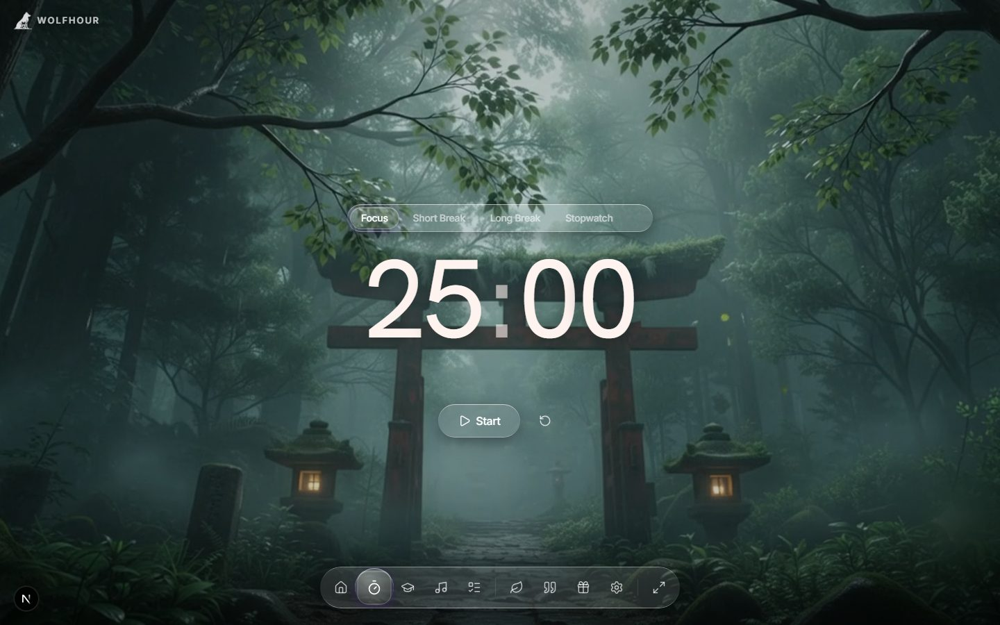
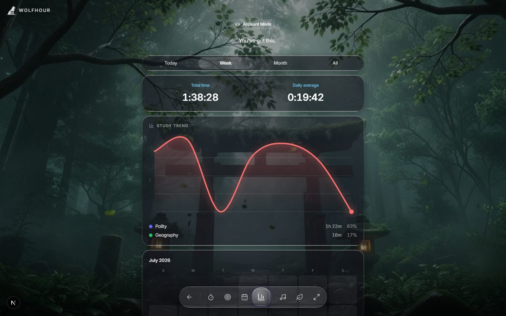
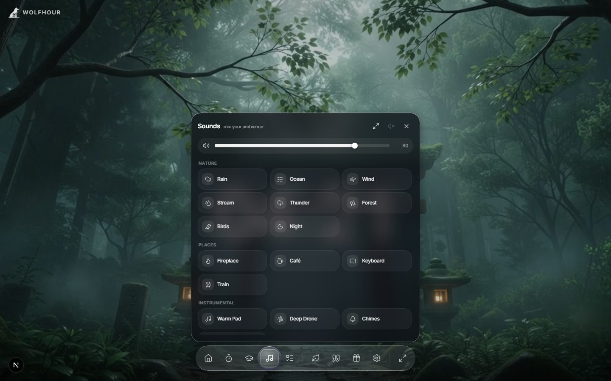

Three tools carry the hour. Click through them.

25 on, 5 off, world muted — focus blocks and breaks one tap apart, with a soft chime when time's up.
Learn more →
Per-subject tracking, goals, streaks and an exam countdown — built for aspirants on a months-long campaign.
Learn more →
Rain, waves, café hum — 22 sounds you layer with independent volumes, generated live with no loop seams.
Learn more →Also inside: live cinematic scenes · clock & font styles · tasks · daily quotes · badges